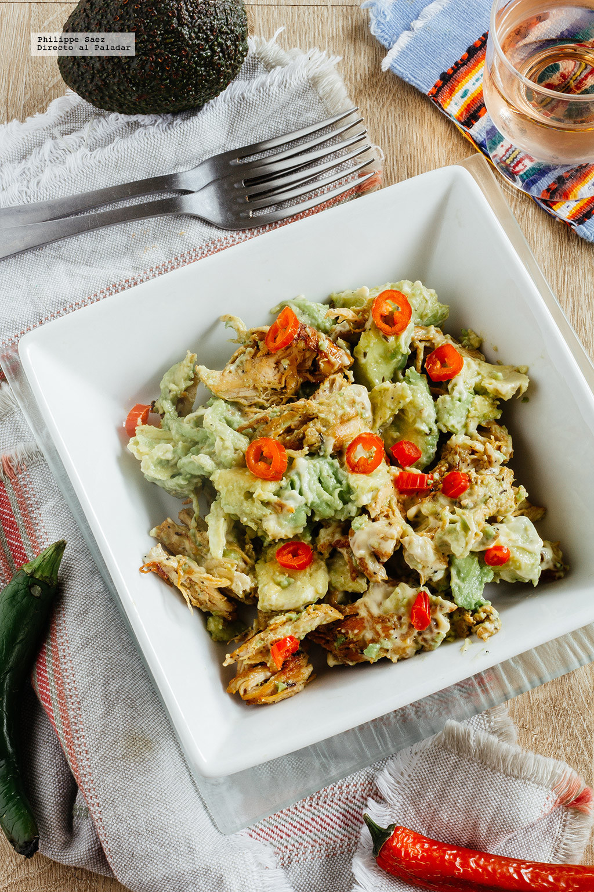

Recata 1
Ensalada de pollo y aguacate
Ingredientes: 2 pechugas de pollo, 2 aguacates maduros, 4 cucharadas de mayonesa, 1 cucharada (sopera) de jugo de limón, 1 chile serrano o jalapeño (opcional), 1 cucharita de finas hierbas, sal y pimienta negra molida.
Preparación: Vamos a poner a calentar el aceite de oliva en un sartén y poner a asar las pechugas de pollo a fuego medio. Las sazonamos con las finas hierbas, sal y pimienta, bajamos ligeramente la lumbre y las dejamos unos 25 minutos, volteándolas de vez en cuando. Cuando estén listas las retiramos del sartén, dejamos enfriar unos 10 minutos y cortamos en trozos. Pelamos los aguacates, les retiramos el hueso y cortamos en trozos de tamaño similar a los de pollo. Colocamos el pollo y el aguacate en un cuenco al que añadimos la mayonesa. Ajustamos el sazón de ser necesario, el chile picado y revolvemos. Dejamos enfriar unos 20 minutos antes de servir.